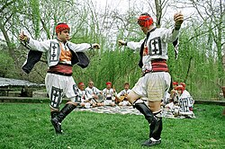
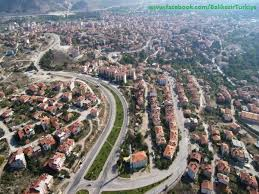

İlçemiz Hakkında
Dursunbey, Balıkesir ilinin yüzölçümü bakımından en büyük ilçesidir. Balıkesir'in doğusunda, Kütahya ve Bursa illerine sınırı bulunmaktadır. Denizden yüksekliği 672 metredir. Bölge dağlıktır, ormanları kerestesi ve lokumu ile meşhurdur. Dursunbey'den Balıkesir-Kütahya kara ve demiryolları geçmektedir. (Wikipedia Kaynağından Alınmıştır.)
TARİHÇE

Dursunbey'in Balıkesir'deki Yeri
Roma Uygarlığı döneminde Dursunbey civarına "Abriettene" adı verildi. Abriettene bölgesinde merkez olan Dursunbey'in ismi de Hadrianeia idi. Hadrianeia (Dursunbey) Romalılar döneminde önemli para basım yerlerinden biriydi. Roma İmparatorları döneminde başta Hadrianus, Antonius, Pivs, Faustina, Marcus Aurelius, gibi önemli imparator ve komutanlar isimlerini ve resimlerini taşıyan bakır ve gümüş paralar darp ettirmişlerdir. Hadrianeia ismi ünlü Roma İmparatoru Hadrianus'dan gelmektedir. Dursunbey yöresine verilen "Hadrianeia" ismi de büyük olasılıkla onun şerefine kurulan bir şehir olduğunu göstermektedir. Hadrianeia şehrinin milattan sonra 131-132 yıllarında kurulduğu tahmin edilmektedir. Osmanlı Devleti zamanında İkinci Osmanlı Padişahı Orhan Gazi, Emir Dursun'u buraya komutan olarak atamış ve ilçeye Emir Dursun'a izafeten "Dursunbey" denmiştir. Önceleri Bursa sancağına bağlı olan Balat, daha sonra 19. yüzyılda Karesi sancağına bağlanmıştır. Dursunbey, Balıkesir Mutasarrıflığı'na bağlı "Balat" adı ile anılan bir bucak merkezi iken 1918 yılında ilçe haline getirilmiştir. Dursunbey kurtuluş savaşı sırasında düşman işgaline uğramış, 3 Eylül 1922 günü kurtarılmıştır.
Coğrafi Yapı
Dursunbey Barana Ekibi
Balıkesir ilinin doğusunda yer alan ilçenin rakımı 672 m, yüzölçümü 1952 km²'dir. Dursunbey coğrafî yönden Ege Bölgesi sınırları içerisinde kalmaktadır. Arazi yapısı itibarıyla dağlık ve çok engebeli bir karaktere sahiptir. En yüksek dağı Alaçam 1683 metre yüksekliktedir. İlçenin arazisinin büyük bir kısmı ormanlar ile örtülüdür. Dursunbey ilçesi, Ege iklim bölgesi içinde yer almakla birlikte yüksek olması ve deniz esintilerine kapalı olması itibarıyla yazlar daha serin, kışlar daha sert ve çok soğuk geçmektedir. İlçe, İç Batı Anadolu (İç Ege) bölgesinin kuzey kesiminde (Kütahya), Kütahya-Balıkesir-Bursa illerinin birleştiği kavşakta yer almaktadır. Bu yüzden, hava tarım için elverişsizlik yaratacak kadar sert soğuktur. Vejetasyon süresi oldukça kısadır. İlçenin iklimi karasal iklim özelliklerini taşır. Kışları soğuk, yazları sıcak geçer, kış ve bahar ayları bol miktarda yağış alır.
İlçemizden Görüntüler
Dursunbey Havadan Görüntüler
Dursunbey Havadan Görüntüler 2